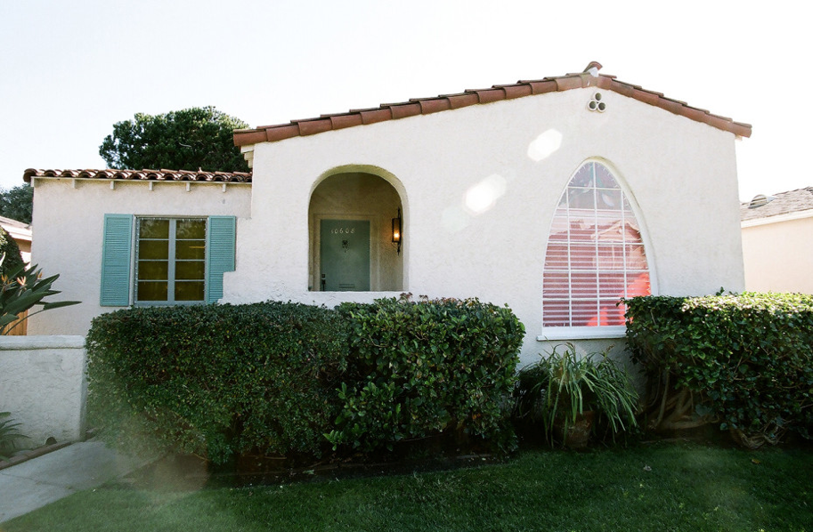

Ever since he dropped his phenomenal debut Section.80, Kendrick Lamar has firmly cemented himself as one of this generation's greatest storytellers.
Hailing from the same city as legends like Dr. Dre and The Game, the Compton native has already been hailed by these legends as the future of the West Coast. After dropping what many hailed a modern classic in Good Kid, m.A.A.d City, he continued to send shockwaves throughout the scene with his iconic Control verse. We spent 24 hours with Lamar, and here's what happened.
7:46am
We woke up early to meet Lamar and his clique in their hotel. From there it was straight to business, stepping into a string of interviews for the day. Calm and composed, the emcee is confident behind the microphone: both one-on-one and in front of thousands of screaming fans.
7:46am
We woke up early to meet Lamar and his clique in their hotel. From there it was straight to business, stepping into a string of interviews for the day. Calm and composed, the emcee is confident behind the microphone: both one-on-one and in front of thousands of screaming fans.